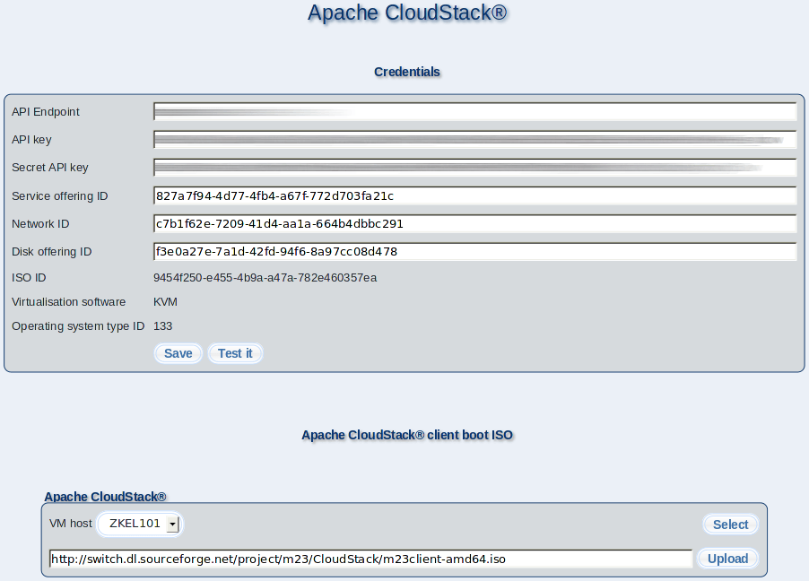

This dialogue allows you to make settings for Apache CloudStack.

Please enter your user credentials at ''Credentials'', to enable the m23 server to contact your Apache CloudStack service. You will get these parameters from your Apache CloudStack provider or from your own Apache CloudStack installation.
At ''API Endpoint'', please enter the address (e.g. https://my-server/client/api ) for the communication with the Apache CloudStack service. To get access, you will also need an API key and a secret API key, which you will have to enter at ''API key'' and ''Secret API key''.
''Service offering ID'' (CPU and RAM), ''Network ID'' (virtual Apache CloudStack network) and ''Disk offering ID'' (type of the virtual hard disk) specify the values of a newly created m23 client in Apache CloudStack.
(Currently) You cannot change the choice of the boot medium from which the operating system installation will be started, the ''ISO ID'', the virtualisation software used: ''Virtualisation software'' and the identification number of the operating system: ''Operating system type ID''.
By clicking on ''Save'' or on ''Test it'', you save the configuration. The second button will execute a connection check first and only save the configuration if there was no error.
At ''Apache CloudStack client boot ISO'', you can select the Apache CloudStack zone (''VM host''), where the m23 client boot ISO will be uploaded to (if it is not yet there). You can start the upload by clicking on ''Upload''. ''ISO ID'' will be adapted automatically after the upload.
These settings are stored on the server in the file ''/m23/inc/CloudStackConf.php'' and can be edited with a texteditor.
Subsections
root
2017-12-13